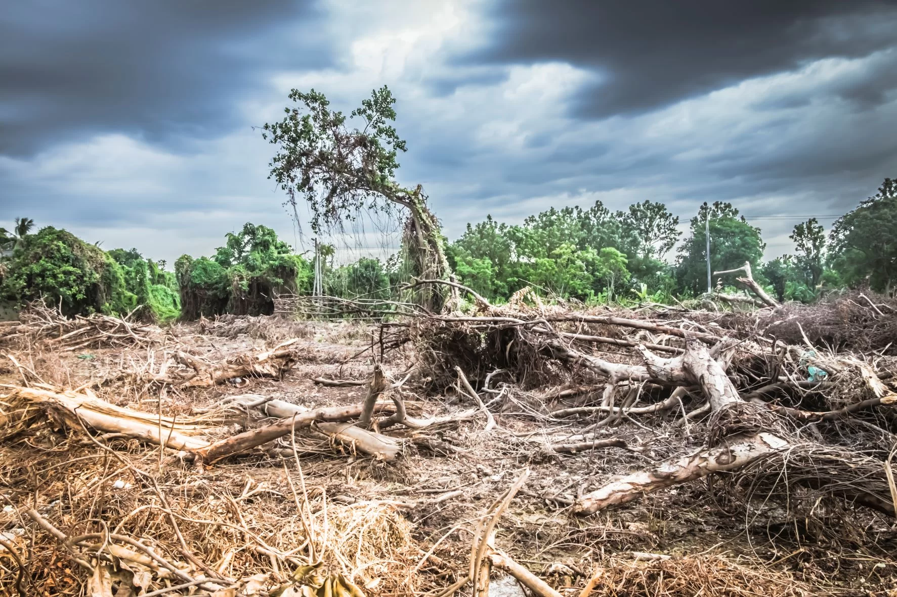
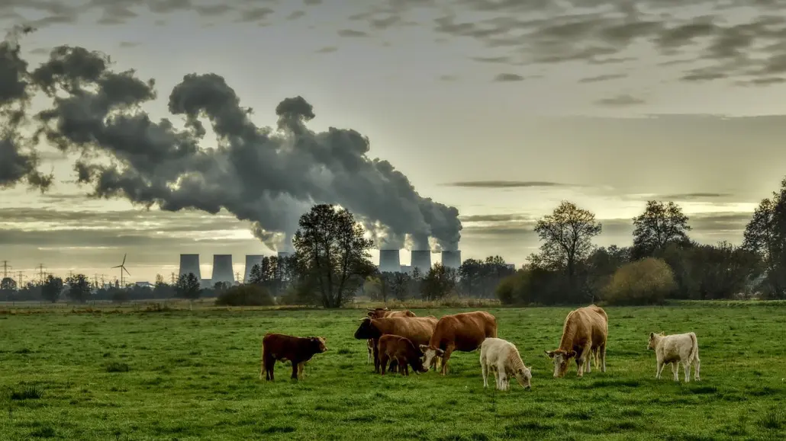
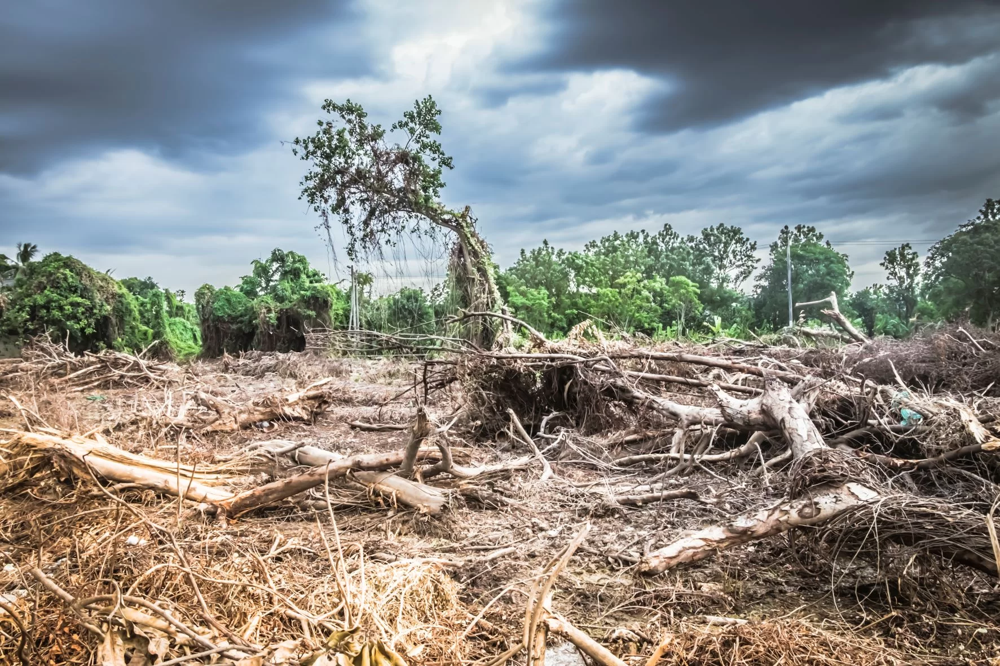
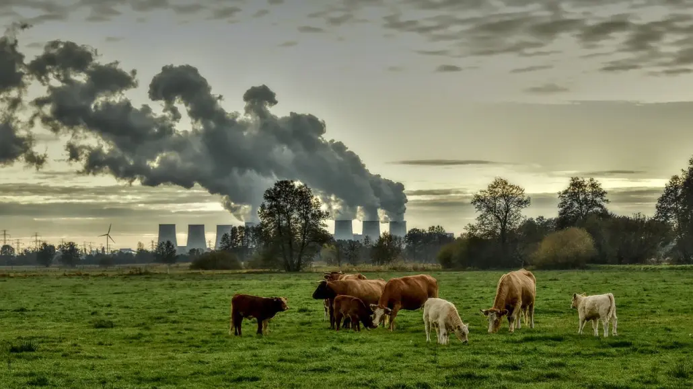

Temas de Interés: Cambio Climático
El cambio climático se refiere a las variaciones a largo plazo en los patrones climáticos promedio del planeta. Esto incluye el aumento de la temperatura global, los cambios en las precipitaciones y el aumento de eventos climáticos extremos.
Galería de Imágenes
 


